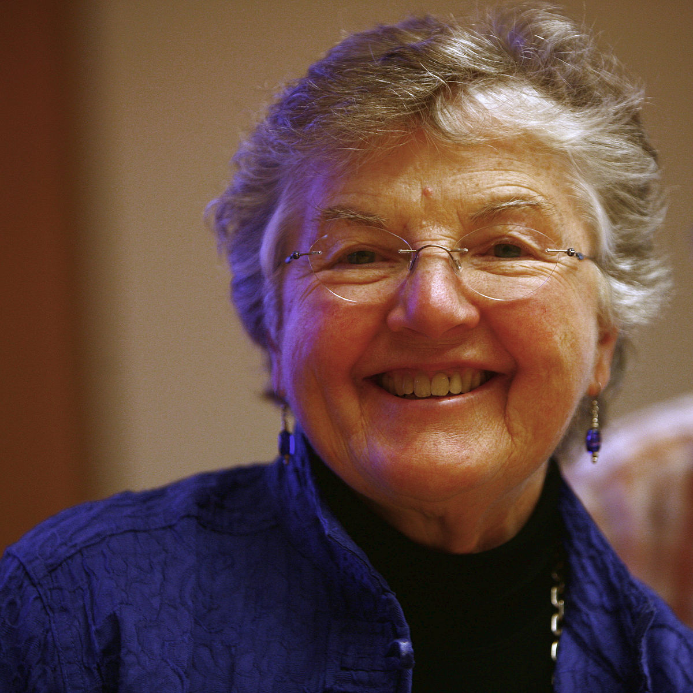
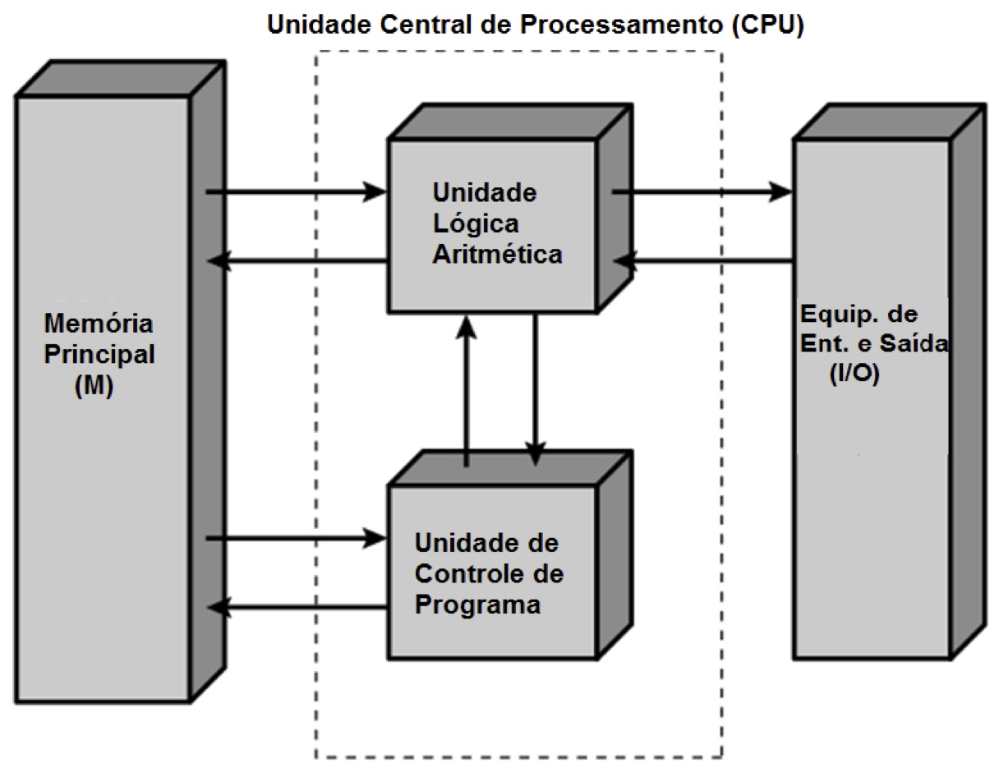

Atualmente a área da computação é composta em sua maioria por homens. Quando pensamos em destaques na área de tecnologia
pesamos em Mark Zuckerberg, Bill Gates, Steve Jobs, mas o que muitas pessoas se esquecem ou se quer nem sabem, é que
a primeira pessoa a criar um algoritmo de programação foi uma mulher, ou que a primeira equipe que programou o primeiro
computador eletrônico contava com seis mulheres na equipe.
Mas então quem são essas mulheres?
Ada: Ada Lovelace foi a primeira programadora da história ao criar um algoritmo para o funcionamento de uma máquina
feita para fazer calculos

Frances: Frances Allen foi uma cientista da computação responsável pelas principais bases de sistemas de otimização
de código de paralelização, trabalhou na IBM e foi a primeira mulher a ganhar o prêmio AM TURNING
Grace: Grace Hopper foi uma das criadoras da linguagem COBOL para bancos de dados comerciais e criadora do termo
"bug".
Hedy: Hedy Lamarr foi uma famosa atriz da década de 40 e criadora de um mecanismo de comunicação que serviu de base
para a telefonia celular.

Programas
Concurso Brazilian Women in Technology: Concurso realizado pela Google Brasil em 2008, inspirado no prémio Anita Borg, onde
somente estudandes do sexo femininos participaram. O objetivo era incentivar e inspirar as meninas a seguirem carreiras
ligadas a área da tecnologia. O concurso contou com o apoio da Sociedade Brasileira da Computação.
Prêmio Anita Borg: O prêmio reconhece os principais talentos femininos na área da inovação tecnológica.
Grace Hopper Celebration of Women in Computing Conference: O GHC é uma conferência de três dias destinada a reunir as mulheres
na computação para discutir interesses de pesquisa e carreira. A conferência inclui apresentações sobre uma variedade
de tópicos, atividades de desenvolvimento profissional, um dia de código aberto e muito mais.
Dicas
Mulheres na Computação
Formada em Ciência da Computação pela USP e também mestranda pela mesma instituição, estagiou no Google na Califórnia e
trabalhou para a Iridescent Learning, ONG americana de educação a distância do movimento maker.
Decidiu voltar para o Brasil e empreender para fazer o que ama: mostrar o poder de transformação da tecnologia e do empreendedorismo.
Seu trabalho como evangelizadora do poder da tecnologia vem sendo reconhecido nacionalmente e internacionalmente, por exemplo com a premiação
inédita para uma latina no prêmio Women of Vision 2015 e com a inclusão na lista das 24 mulheres que estão mudando o mundo da revista Marie Claire.